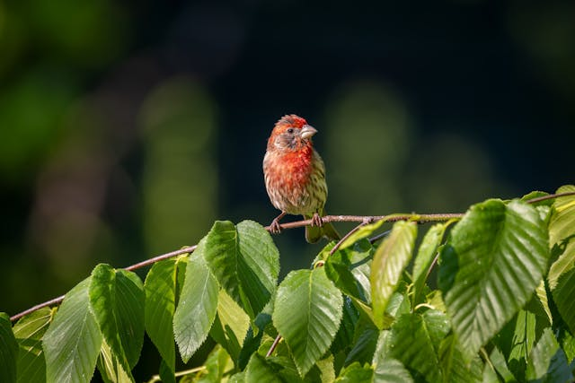
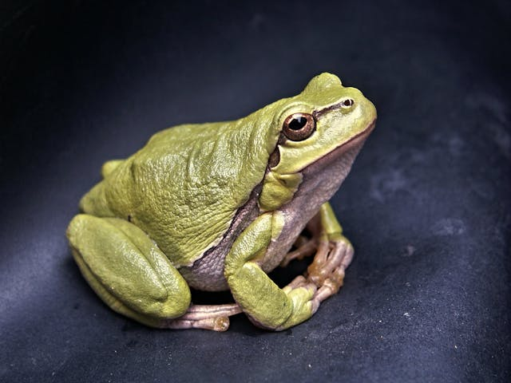
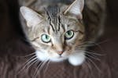

Join us, care for and protect our nature, forests and wildlife.
with you we are stronger
The virtues of animals.

Being able to feel the freedom that the bird feels when it flies

Have the tranquility, the coldness, of the frog before hunting

Free spirit, with the hunting instinct of the most faithful of felinesForesight mentality in the face of adversity and
the long-term view
We can destroy the pyramids of Egypt whenever we want, it is all a matter of dynamite and rebuilding them
is a matter of time; But when a single animal species disappears, we have lost it forever, because only God can create.